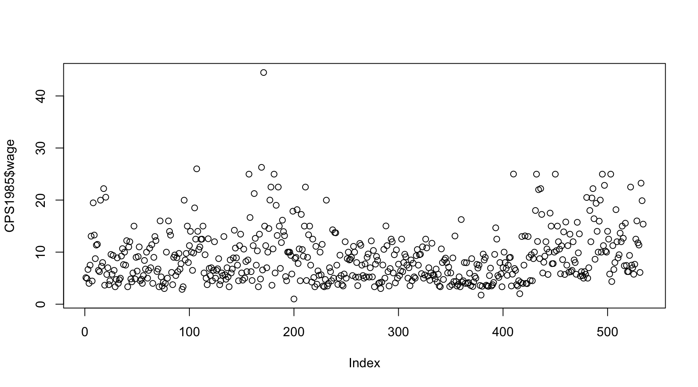
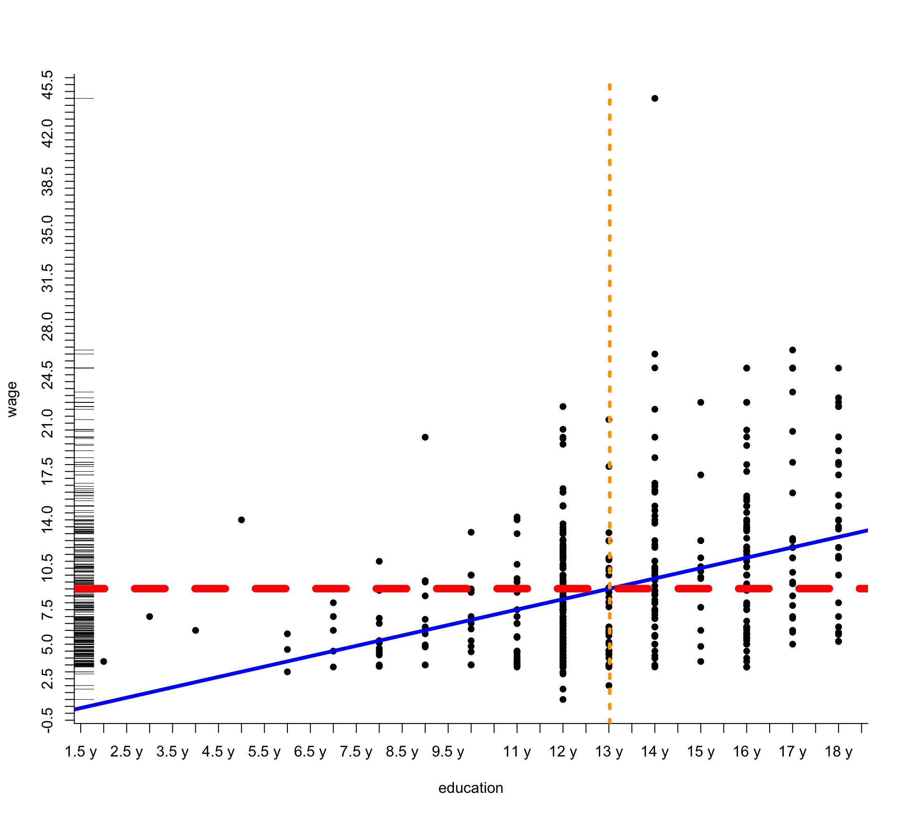
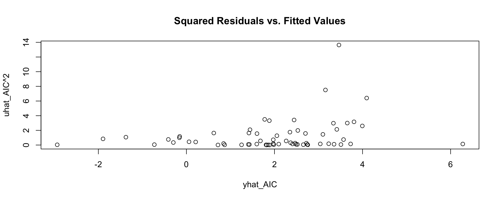

> sin(2*pi)
> 2 - 1
> 0/0 # -> NaN (not defined)
> Inf-Inf # -> NaN (not defined)
> 2 + 3*4 # Operator precedence
> 2 +
+ 1 # Execution only when expression is complete[1] -2.449294e-16
[1] 1
[1] NaN
[1] NaN
[1] 14
[1] 3You’ll need a
code/RData/Kleiber, C. & Zeileis, A. (2008), Applied Econometrics with R, Springer.
Braun, J. & Murdoch, D. (2021), A first course in statistical programming with R
Wickham, H. (2019) Advanced R
Wickham, H. & Grolemund, G. (2017), R for Data Science
Verzani, J. (2014), Using R for Introductory Statistics
Matloff, N. (2011), The Art of R Programming
Wickham, H. (2023) R Packages
Course website: tbd
Any further references?
R is…
Rcpp (fast, user-friendly) or by calling C / Fortran routines directly (faster, less user-friendly)While many simple calculations can be done using the command line, as soon as things get more complicated, scripts should be used.
A script is a text file (usually with a ‘.R’ file extension) that contains R code. For example:
Text files are edited using text editors. There are several editors that make working with R easier:
Structure: 4 windows
Individual windows can now also be detached from the main window
To execute code from the editor:
To get help on a known function, you can either search for the function in the RStudio help tab or enter the following in the R console:
If you are looking for an unknown function (e.g., a function that performs a t-test), the best approach is to use Google, e.g.:
As a more recent alternative, consult a LLM but make sure to check the proposed solution for errors
Whenever something happens, functions are called. All operators, control flows, etc., are functions in R.
A function is called by specifying the function name followed by one or more comma-separated arguments in parentheses: function_name(argument1 = value1, argument2 = value2,...)
Argument names do not always need to be specified: function_name(value1, value2,...)
Attention: Order matters!
There are also default arguments, which do not always need to be specified. More on this later.
The symbol <- is the assignment operator, storing the value of the expression on the right into the variable on the left:
Examples:
More Examples:
Quantifiers:
Missing Values:
Testing for NA is only possible with is.na(). x == NA always returns NA!
Examples:
ls() displays existing objects in the global environmentstr() shows the structure of an objectrm() removes an object from the global workspacegetwd() displays the current working directorysetwd() changes the working directory
/ or \\
/
save() saves objects as an .RData fileload() loads objects into the global environmentlist.files() shows files in the specified directorysource() runs an R scriptThere are many packages available on CRAN for various applications. These allow for expanding the relatively small core system of R. While R comes with some standard packages, many need to be installed separately.
search() shows the search path, i.e., which packages are already loaded:Create a file test.R in your codes folder. This file should contain a script that creates the object x assigned to 5 and the object y assigned to 6. Before sourcing this test.R file using the source function, clear your entire workspace. Then, inspect the workspace, compute the product of the two numbers, delete the object x, and save the remaining workspace in .RData format in the “RData” folder.
Note: In general, it is wise to avoid frequently changing the working directory. Instead, simply use the source function on the explicit code folder.
Test R as a calculator: 1. Compute the value of the sine function at 0. 2. Define x as 2 and compute its double third power.
Find an R package that provides functions to test linear hypotheses in multiple regression models. Install the package and check the help documentation for one of its functions.
A function is a programming construct that executes a procedure on provided objects and returns a result.
There are functions with and without side effects:
log()
setwd(), '<-'() (assignment is also a function!)\(\Rightarrow\) When developing functions, side effects should be avoided unless explicitly desired.
A function is defined as follows:
What happens when the function is called?
product1(x1 = 1,x2 = 2)
At runtime, a new environment is created, containing two variables: x1 with value 1 and x2 with value 2. These are used to compute the product, which is then returned.
Not all functions require arguments, e.g., getwd():
Since f2 has no arguments, x1 and x2 are searched in the next higher environment.
...)A special argument in R is the “three dots” argument (...). This allows arguments to be passed flexibly:
All arguments that f5 does not explicitly use are passed to log():
Some functions, such as print(), summary(), and plot(), call methods. These perform different operations depending on the class of the passed object.
R has two (recently three) class systems: S3, S4, and Reference Classes (the latter being closest to object-oriented programming).
All objects that are not data are functions.
What you should now know:
For the source code of a function (R is NOT a black box!), Uwe Ligges’ article in R News (p. 43) is a great reference.
“When looking at R source code, sometimes calls to one of the following functions show up: .C(), .Call(), .Fortran(), .External(), or .Internal() and .Primitive(). These functions call entry points in compiled code such as shared objects, static libraries, or dynamic link libraries. Therefore, it is necessary to look into the sources of the compiled code if complete understanding of the code is required. … The first step is to look up the entry point in file $R HOME/src/main/names.c, if the calling R function is either .Primitive() or .Internal().”
Create a function named getSquaredSum that takes two numbers as input, calculates their squared sum, and returns it. Test this function in two ways. Then, set the second function argument to default to 0.
Create a function in which another function is defined and then called within the function body. Now define the “inner function” outside of the “outer function.” Which approach do you prefer? Check if everything works and produces the same results!
All complex data types (vectors, matrices, lists, etc.) in R are built from atomic data types:
NULL: the empty setlogical: logical valuesinteger: whole numbersnumeric: real numberscomplex: complex numberscharacter: letters and strings?typeof
For each atomic data type, there is a function to check if an object belongs to that type, as well as a function to convert (if possible) into the respective type:
Vectors are the fundamental structure in R and consist of multiple elements of an atomic data type. The function c() is used to create vectors:
Other ways to create vectors:
1:5, alternatively: seq(1,5)
seq(from, to, by)
rep()
Individual elements in vectors can also be named:
Since R is a vectorized language, all elementary arithmetic operations are vectorized:
Warning: If vectors have different lengths, the shorter one is recycled to match the longer one. If the lengths do not align perfectly, a warning is issued:
To access individual elements in a vector, indexing can be used. For example, the fourth element of vector x is accessed with x[4]. Different indexing methods include:
x[c(2,3,7)] selects the 2nd, 3rd, and 7th elements of x.x[c(TRUE, FALSE, TRUE, FALSE, FALSE)] selects the 1st and 3rd elements of x (if x has five elements).x["one"] selects the element named “one”.x[-1] selects all elements except the first.x[ x > 2 ] selects all elements greater than 2 (if x is numeric).Write a function that calculates the sum of two vectors and returns the result as a string in the format:
“The sum is [value]”.
Test the function with the following vectors:
Hint: Check the help for the paste() function.
Matrices are created using the function matrix(data= NA, ncol=1, nrow =1, byrow = FALSE). Example:
[,1] [,2] [,3]
[1,] 1 4 7
[2,] 2 5 8
[3,] 3 6 9If data is not long enough, it is recycled:
[,1] [,2] [,3]
[1,] 1 2 1
[2,] 2 1 2
[3,] 1 2 1Filling by rows:
Indexing matrices is similar to vector indexing (numeric, logical, by name, etc.), but requires both row and column indices:
Matrices have two dimensions. A generalization to multiple dimensions is an array, created with the function array(data, dim), where dim is a vector specifying the number of elements in each dimension:
This creates an array with dimensions \(3 \times 3 \times 5\).
For the matrix A = Mat_A
and the vector b = vec_b
Compute the matrix product \(A \cdot b\) and the element-wise product. Explain the differences.
Define the vector \(y = (3,5,2,8,6,4,7)'\) and the matrix \(X\), where the first column consists of ones and the second column contains \((4,3,7,1,3,7,5)'\).
X and y.y and X and returns a matrix containing the OLS estimates and their standard errors as columns.Add the following matrix to your R environment \[A = \begin{pmatrix} 1.0 & 0.5\\ 0.5 & 1.0 \end{pmatrix}.\] Calculate the eigendecomposition \(V\cdot \Lambda\cdot V^{-1}\) of \(A\), where \(\Lambda\) is a diagonal matrix holding the eigenvalues, and \(V\) is a matrix of eigenvectors. Check whether the above product equals \(A\).
When optimization involves a non-diagonal covariance matrix \(Q\), one needs to ensure \(Q\) is symmetric p.s.d., which limits the parameter space of the optimization problem. Write a bijective function \(Q = f(\theta)\) that maps a three-dimensional parameter vector \(\theta \in \mathbb{R}^3\) to the \(2 \times 2\) covarinace matrix \(Q\), \(f: \theta \rightarrow Q\), ensuring \(Q\) is symmetric p.s.d.
Write the inverse function \(f^{-1}: Q \rightarrow \theta\)
Use a LLM to solve the two tasks and check with your solution. What prompt do you use? Do you get the same results?
Vectors, matrices, and arrays require all elements to be of the same data type. Lists, however, are more general as they allow arbitrary combinations of data types. A list is created using the list() function.
Lists can also contain other lists:
Lists are indexed using double square brackets (numeric, logical, by name):
Named lists can also be accessed using the $ operator:
str() function to your list.Dataframes are lists whose elements are vectors of the same length but not necessarily of the same data type. Typically, datasets in R are stored in dataframes.
Dataframes are created using data.frame() and can be indexed both like matrices and like lists.
Examples:
Players <- data.frame(
FirstName = c("Joren","Ozgur","Bryan","Camil"),
LastName = c("Op de Beeck","Aktas","Smeets","Mmaee"),
Position = c("Goalkeeper","Defender","Midfielder","Forward"),
Age = c(19,28,32,20),
Number = c(23,3,5,7),
stringsAsFactors = FALSE # Names should be read as "character"
# and not as "factor"
)Indexing:
To add variables to the dataset:
Often, you want to select specific observations from a dataset. The subset() function is useful for this, along with the %in% operator:
Later, we will explore functions from the dplyr package, which provide more flexibility for selections.
Other useful functions for data.frames:
Use the data.frame “Players” that was just created and perform the following actions:
These special objects are not atomic data types, but they are useful in many applications.
Information about groups (categorical features) is often required. Examples include:
For this type of information, R provides factor variables, which are created using factor():
Categorical data can sometimes have a meaningful order.
Example:
Surveys often include questions like:
“AI is very helpful, but only if we understand what we want and express it clearly!”
with response options:
strongly agreepartially agreeneutralsomewhat disagreestrongly disagreeIn such cases, ordering is useful - also for statistical analysis.
Ordered factor variables are created using the ordered() function:
Create a factor with the levels "Flanders", "Wallonia", "Brussels". Also, create an ordered factor sorted in alphabetical order.
Sometimes, timestamps and/or date information are needed. R provides dedicated data structures for this purpose:
The POSIXct class is a data structure that stores a timestamp as the number of seconds since January 1, 1970, 00:00:00 UTC:
POSIX timestamps are a widely used convention for representing time in computers.
R provides multiple formatting options for POSIXct/POSIXlt through the format() function (see also the strptime() function and the article on R-Bloggers).
Some format specifiers:
%m: Month as a decimal number (01-12)%y: Year without century (00 - 99)%Y: Year with century, e.g., 1987%H: Hour as a decimal numberExample:
Often, only the date (without the time) is needed. For this, R provides the Date class.
With the Date and POSIXct classes, calculations can be performed:
On November 3, 2020, the U.S. presidential election took place.
Read this date into R.
Format it in R as:
On what day last year did the transition from daylight saving time to standard time occur?
Hint: It is sufficient to show that this day had 25 hours.
There are several possible classes for time series in R, e.g., ts (from the stats package) and zoo (provided by the zoo package):
ts objects can only represent regular time series. This can sometimes be inconvenient (e.g., trading days in the stock market). For irregular time series, zoo can be used:
Generate a variable Birthdate of class date that holds your date of birth. Then, calculate how many days have passed since you have been born.
There are various ways to read data into R, depending on the format in which the data is stored:
.RData), objects within it can be easily loaded into the workspace using load().Players in CSV format (with , as a separator) looks like this:Functions to read structured text files include read.table(), read.csv(), read.csv2(), read.delim(), and read.delim2(), each with different default settings.
xls/xlsx files: R previously had difficulties handling Excel files, but now the readxl package provides functions read_xls() and read_xlsx().foreign and haven packages.Examples:
More examples (first, download a zip folder with sample files):
install.packages("readxl", "haven") ## Install packages if not available
library(openxlsx)
excel_data <- openxlsx::read.xlsx("climate.xlsx")
csv_data <- read.csv("climate.csv") ## Default values for sep, dec, and header already match!
stata_data <- haven::read_dta("climate.dta") ## Specify namespace using "::"Read the climate data ‘climate.csv’ into R. Download the corresponding data set.
Use the read.table function and import the dataset as data_cli. After reading in the data, perform the following steps:
Most data can be saved to disk just as they are read in using write.csv(), write.table(), haven::write_dta(), etc.
More fundamental methods to read/write data: readLines()/writeLines(), scan()/write().
Database connections via the odbc package.
Reading from the clipboard after copying data from the players dataset:
Network resources via url(), compressed files with unz(), etc.
See also ?connections().
graphics package.ggplot2 (see book by Hadley Wickham), plotly, Rgnuplot,…To create plots with R’s standard graphics package, there are high-level and low-level plotting functions.
Available devices include:
Creating a graphic:
plot() is a function that calls different methods for different objects:
These methods correspond to the available high-level plot functions.
barplot(): Bar chartpie(): Pie chart (plotrix package includes pie3d)boxplot(): Box plotcontour(): Ideal for contour maps, i.e., f: R² -> R; filled.contour() for colored contour mapscoplot(): Conditioning plotcurve(): Line plot, allows function input via curve(f(x))
dotchart(): Useful for many factors with one levelhist(): Histogrammosaicplot(): Mosaic plot; useful for compositions over timeExamples:
Examples:
Examples:
par() is often used:
Overview: Frequently used arguments in graphic functions. See ?par for all graphical options
axes: Axis specificationbg: Background colorcex: Factor for scaling relative to the defaultcol: Plot colorlog: xlog and ylog for logarithmic scaleslty, lwd: Line type and thicknessmai: 4-vector specifying margins (bottom, left, top, right)main, sub: Title, subtitlemar: Marginmfcol, mfrow: Multiple plots in one graphics window (column-wise/row-wise)pch: Point character (1-16)usr: The extreme points for a plotxlab, ylab: x and y axis labelsxlim, ylim: x and y axis limitslines: Draw linesabline: Quickly add horizontal, vertical lines, and lines using equation \(y = bx + a\)
points: Add pointsarrows: Add arrowspolygon: Draw arbitrary polygonssegments: Draw unfilled polygonsaxis: Customize axesgrid: Add a gridrug: “Density carpet”title: Add a titlelegend: Add a legendtext: Add text at \((x,y)\) coordinatesmtext: Add text with positional specification like side=1,...,4
attach(CPS1985)
plot(x = education, y = wage,
pch = 30, axes = FALSE)
# Add axes
ticks <- seq(-100, 100, 0.5)
axis(side = 1, at = ticks,
labels = paste(ticks,"y"))
axis(side = 2, at =
seq(-100,100, 0.5))
# Add tick marks
rug(wage, side = 2)
# Add regression line
abline(a = -0.7460, b=0.7505,
col="blue") #<<
abline(h = mean(wage), lty=2,
col = "red", lwd = 8) #<<
abline(v = mean(education), lty=3,
col = "orange", lwd = 4) #<<
plot(x = education, y = wage, # <<<<<<<<
pch = 16)
lines(x = c(2, 7, 10),
y = c(20, 30, 25),
col="darkgreen", lwd = 3)
points(x = c(2, 7, 10),
y = c(20, 30, 25),
col="darkred", pch = 19)
polygon(x = c(3, 3, 10, 8),
y = c(10,20,20,10),
col="lightgreen")
arrows(x0 = 10, y0 = 40, x1 = 13.8, #<<
y1 = 44.2, lwd = 5, #<<
col = "darkblue") #<<plot(x = education, y = wage, # <<<<<<<<
pch = 16)
lines(x = c(2, 7, 10),
y = c(20, 30, 25),
col="darkgreen", lwd = 3)
points(x = c(2, 7, 10),
y = c(20, 30, 25),
col="darkred", pch = 19)
polygon(x = c(3, 3, 10, 8),
y = c(10,20,20,10),
col="lightgreen")
arrows(x0 = 10, y0 = 40, x1 = 13.8,
y1 = 44.2, lwd = 5,
col = "darkblue")
title("Wage versus Education") #<<plot(x = education, y = wage, # <<<<<<<<
pch = 16)
lines(x = c(2, 7, 10),
y = c(20, 30, 25),
col="darkgreen", lwd = 3)
points(x = c(2, 7, 10),
y = c(20, 30, 25),
col="darkred", pch = 19)
polygon(x = c(3, 3, 10, 8),
y = c(10,20,20,10),
col="lightgreen")
arrows(x0 = 10, y0 = 40, x1 = 13.8,
y1 = 44.2, lwd = 5,
col = "darkblue")
title("Wage versus Education") #<<
text(x = 11, y = 30,
"Text in Plot") #<<plot(x = education, y = wage,# <<<<<<<<
pch = 16)
lines(x = c(2, 7, 10),
y = c(20, 30, 25),
col="darkgreen", lwd = 3)
points(x = c(2, 7, 10),
y = c(20, 30, 25),
col="darkred", pch = 19)
polygon(x = c(3, 3, 10, 8),
y = c(10,20,20,10),
col="lightgreen")
arrows(x0 = 10, y0 = 40, x1 = 13.8,
y1 = 44.2, lwd = 5,
col = "darkblue")
title("Wage versus Education") #<<
text(x = 11, y = 30, "Text in Plot")
legend(x="topright", #<<
legend = c("Data point","Line"), #<<
lty = c(NA, 1),
pch = c(19, NA), #<<
lwd = c(1, 3),
col = c(1, "darkgreen")) #<<Draw a plot of the function ( f(x) = e^x + 2 ) in the range from -2 to +2, with the line color set to green.
Create a legend in the upper left corner with the entry ( e^x + 2 ) and the corresponding line.
Hint: To include mathematical labels in a legend, you need to use
“mathematical annotations,” which can be found here.
With paste() and expression(), this should be straightforward.
Create a scatter plot of daily average temperature in Maastricht against Eelde using the wide-format climate data. Color the points based on whether the average temperature in Maastricht on that day was above or below 10°C:
Use red for days when Maastricht’s temperature was above 10°C, Use blue for days when it was 10°C or below. Add a legend to indicate the meaning of the colors.
Try to draw a white, five-pointed star on a red background (e.g., using polygon()).
Save this as a .pdf file in the “graphs” folder.
See whether a LLM improves your graph: Write a promt for a LLM of choice to create the scatter plot of task 3.2. Come up with further characteristics you could add, and see if the AI model produces a satisfactory graph.
In this chapter, we will (superficially) cover the package dplyr. This package is part of the tidyverse, a collection of R packages designed to provide a consistent approach to working with data. The following packages belong to the tidyverse:
dplyr: “Grammar of Data Manipulation”
ggplot2: “Grammar of Graphics”
readr: “Fast and friendly way to read rectangular data”
tibble: “A tibble, or tbl_df, is a modern reimagining of the data.frame”
tidyr: “Create tidy data. Tidy data is data where:
purrr: “Enhance R’s functional programming toolkit”
An important component of working with data and dplyr is the pipe operator %>%, included in the magrittr package. The goal of this operator (also found in many other languages) is to make function composition more readable in code.
Example:
dplyr with %>%
In the second example, you can already see that the pipe operator often eliminates the need for unnecessary assignments.
dplyrThe key functions of dplyr are:
mutate(): Add new variables to a dataset
select(): Select variables (columns)
filter(): Select observations (rows)
arrange(): Sort observations
summarise(): Reduce variable values of multiple observations to a single value
group_by(): Apply subsequent operations to groups
join(): Merge two datasets
These functions often have variants and additional helper functions that assist with variable selection.
Datasets that are tidy should have each observation as a row and each variable as a column (long format). However, datasets are often found in wide format.
A way to convert wide to long is the pivot_longer() function from tidyr:
library(tidyr) ## version 1.0.0
data_wide <- data.frame(id = c(1,2,3,4),
wage90 = c(12,13,14,11),
wage95 = c(14,16,13,18))
data_long <- data_wide %>%
pivot_longer(cols = starts_with("wage"), # Select columns #<<
names_to = "year", # New column name #<<
values_to = "wage") # New column for values #<<
class(data_long) # tbl_df, tbl, data.frameMeasures of central tendency:
## Multiple continuous variables
CPS1985 %>%
select(wage, education, age) %>% {
pairs(.)
cor(.)
}
## Discrete variables (frequency tables)
CPS1985 %>%
group_by(gender, sector) %>%
summarise(n = n())
## Alternative:
with(CPS1985,
ftable(gender, sector)
)
## Or also:
xtabs(~gender + sector, data = CPS1985)Use the wide-format temperature data set temperature.
Add the variable tempF (temperature in Fahrenheit) to the dataset using mutate() and the pipe operator.
Compute, grouped by city and year, the mean temperature and standard deviation.
Find the coolest and warmest day for each city.
Add a variable lowest_temperature to the dataset, which remains constant within each city group and corresponds to the lowest temperature in that respective group. Do the same for highest_temperature
Sort the dataset within city groups by temperature.
Create a histogram of the daily temperatures in Eindhoven.
Overlay the density function of a normal distribution with the same mean and variance as the temperatures in Eindhoven.
Draw the mean as a dashed line.
Use a polygon to shade the area under the density function up to the 25% quantile.
Hints: Use dnorm() with mean() and sd() to define the normal density curve. Use polygon() for shading and abline() for the dashed line.
The code on the next slide collects climate data for Dutch cities in long format. Use dplyr to
I_RAIN_DRIZZLE) and identify the city with the highest and lowest number of rainy days.PRCP, hint: use na.rm = TRUE to get rid of the NA values)# Install if needed
install.packages(c("dplyr", "lubridate", "GSODR"))
# Load libraries
library(dplyr)
library(lubridate)
library(GSODR)
# list of Dutch cities
cities <- data.frame(
city = c("Amsterdam", "Rotterdam", "The Hague", "Utrecht", "Eindhoven", "Tilburg", "Groningen", "Almere", "Breda", "Nijmegen", "Enschede", "Haarlem", "Arnhem", "Zaanstad", "Maastricht", "Apeldoorn"),
lat = c(52.37, 51.92, 52.08, 52.09, 51.44, 51.56, 53.22, 52.37, 51.59, 51.84, 52.22, 52.39, 51.98, 52.45, 50.85, 52.21),
lon = c(4.89, 4.48, 4.30, 5.11, 5.48, 5.09, 6.57, 5.22, 4.78, 5.85, 6.89, 4.64, 5.92, 4.81, 5.69, 5.97)
)
# Find closest weather stations
cities$stations <- sapply(1:NROW(cities), function(j){
nearest_stations(cities$lat[j], cities$lon[j], 100) %>%
filter(END >= 20240000) %>%
.[which.min(distance_km), ] %>%
pull(STNID)
})
weather_data <- get_GSOD(years = 2023, station = cities$stations)Often, expressions (calculations, estimations, simulations, plots…) should only be executed under certain conditions and/or repeated multiple times. Sometimes an operation is so complex that breaking it down into repeated steps makes it easier to think through and program.
In such cases, we need constructs:
if, else)for, while)apply() functionsVectorize() modifies functions so they can be applied to multiple elements at onceThe entire construct is still an expression and therefore has a value (specifically, the value of the last evaluated expression):
Be cautious with vector-valued expressions:
If you want to check whether all elements of a vector satisfy a certain property, the quantifiers any() and all() are useful:
Of course, there may be more than two cases to consider, for example:
\[f(x) = \cases{0 \text{ for } x \leq 5\\ 4 \text{ for } 0< x \leq 5\\ 6 \text{ otherwise.}}\]
Another option is the switch(expr, ...) function:
Sometimes we want to check vectorized objects and return a separate value for each entry. For this, we use the ifelse() function:
Write a function if_test that takes two objects, x and y, and checks whether x is numeric and y is of type character. If both conditions are met, the function should print “Super”; otherwise, it should indicate which of the two objects x/y does not meet the required condition.
Test your function with:
Hint: Use is.character() and is.numeric().
Frequently, small code blocks need to be executed multiple times. Loops help with this. In R, there are three types of loops:
repeat{ Code }: A loop that executes Code indefinitely and must be stopped with break.
while( Condition) { Code }: The code Code executes as long as is.logical(Condition) evaluates to TRUE.
for (value in values) { Code }: The code Code runs once for each element in the vector values. The variable value takes on the value of each element during each iteration.
In addition to break (which terminates the loop), there is another control command: next (which immediately jumps to the next iteration of the loop).
Examples
The following would yield the same result as the latter for loop:
Expressions in constructs are evaluated in the environment in which they are called. Thus, the variable i has the value 100 after executing the loop:
All these constructs can, of course, be freely combined:
Algorithmic idea (very naive, thus not suitable for practical use):
We want to numerically find the maximum of a downward-opening parabola. We start at a value where we are sure that the parabola is still increasing, move stepwise to the right while checking whether the value of the parabola is still increasing significantly. If this is not the case, we stop:
Code:
parabola <- function(x) -x^2
xx <- -2 ## here we start
yy <- parabola(xx) ## what is the value of the parabola here?
dY <- 1 ## we initialize a value so that while() does not terminate immediately
while( dY > 0.0000001){
xx <- xx + 0.01 ## move xx one step to the right
yyNew <- parabola(xx) ## what is the value of the parabola at the new xx?
dY <- yyNew - yy ## by how much did the value of the parabola increase in this step?
## this dY is used before the next loop iteration to check
## whether the condition dY >0.0000001 is still met.
yy <- yyNew ## make yy the new value for the next loop iteration
}%*% operator. Use one or more loops and something like sum(A[1,] * B[,1]) for C[1,1], etc.mat_mult from the loops of the previous subtask, which, when given two matrices, computes their product but first checks with if whether the row length of one matrix matches the column length of the other matrix. Test this with the matrices above.Write a function optimizer that, when given a (real-valued) function, numerically searches for its optimum. Use the example code above.
Instead of the optimization method used above, try implementing a bisection method. See the Wikipedia article on the Bisection Method.
Hint: To compute the derivative of a function fun at a point x, you can use the function numericDeriv() from the stats package as follows:
Loops in R are relatively slow and can sometimes lead to less readable code. Where possible, loops should be avoided. Often, a loop can be replaced by vectorization (with extreme performance gains since loops are then executed in C rather than in R).
In addition, R provides a family of apply constructs that enable vectorized operations.
For working with matrices and arrays, the apply() function is available. This function can apply suitable functions to rows or columns.
A <- matrix(c(2, 6, 3, 4, 5, 7, 8, 4, 1), ncol = 3)
## row-wise maximum:
apply(X = A, ## an array or a matrix
MARGIN = 1, ## Over which indices should the function be applied
## (1 -> rows, 2 -> columns)
FUN = max ## which function should be applied?
)
X <- rnorm(1000) %>%
matrix(ncol = 10)
apply(X, 2, var) ## Variances of the columnsOften, lists are available, and a function needs to be applied to each element, returning a list as a result. The lapply() function serves this purpose.
Often, the result does not need to be a list but rather a vector (or a matrix/array). This is achieved using sapply():
All members of the apply family accept the ... argument, allowing additional parameters to be passed to the function:
Create a \(10\times 10\) matrix where the \(ij\)-th element is given by \((i\cdot j)^{(1/j)}\). Use two nested loops for this. Then, compute the row and column sums of this matrix using an apply function of your choice.
Sometimes, objects need to be created dynamically with names dependent on other variables and later retrieved. This cannot be done using <-. Therefore, R provides the functions assign() and get().
Further example:
Another example demonstrating the usefulness of assign():
Store the summary() output of each variable in the CPS1985 dataset as summary_{VariableName}.
What exactly is happening here?
Break it down step by step:
Often, it is not known in advance whether executing code will result in errors.
Sometimes quite useful: recursive functions.
assign and get be avoided for this problem?Write a function named “fib” that, given a natural number n, computes the n-th Fibonacci number. The Fibonacci sequence is defined recursively as follows:
\(a_0=0\), \(a_1=1\), and \(a_n=a_{n-1}+a_{n-2}\).
Reconsider the wide-format temperature data set temperature. You want to identify the day when the temperature was equal to or closest to 20 degrees for De Bilt in 2024. Your task is to write a loop that searches for this temperature value, using a half-way (binary-like) search approach.
Steps:
In econometrics (which can also be applied to other scientific fields), we often ask questions like:
The standard tool for such analyses: multiple linear regression model
\[y_i = \beta_0 + \beta_1 x_{1,i} + \beta_2 x_{2,i} + \dots + \beta_p x_{p,i} + u_i,\ i=1,\dots,n\] Or, in matrix notation: \[\mathbf{y} = \mathbf{X}\beta + \mathbf{u},\] where \(\mathbf{y}, \mathbf{u}\in\mathbb{R}^{n}\), \(\mathbf{X}\in\mathbb{R}^{n\times k}\), \(\beta\in\mathbb{R}^{k}\), and \(k = p + 1\).
R is designed to easily estimate various statistical models. It provides a specific object class to symbolically describe statistical models, called formula objects. See ?formula for more details.
Example: the regression model
\(y_i = \beta_0 + \beta_1 x_{1,i} + \beta_2 x_{2,i} + u_i\)
can be specified in R as a formula like this:
y ~ x1 + x2
Important operators:
~: Basis for all models. y ~ model specifies that the dependent variable y is modeled using the linear predictors described in model.+: Models consist of terms separated by + (in simple cases, these are variables).:: Creates interaction terms between variables.*: a*b is equivalent to a + b + a:b.^: (a + b)^2 is equivalent to (a + b) * (a + b).Note: y ~ x1 + x2^2 is NOT the model \(y_i = \beta_0 + \beta_1 x_{1,i} + \beta_2 x^2_{2,i} + u_i\)!
For arithmetic expressions (e.g., variable transformations), use the function I(): y ~ x1 + I(x2^2).
Factor variables in formulas are automatically dummy coded.
The standard function for estimating linear models is lm(). This function returns an lm object with numerous available methods: summary(), plot(), predict(), etc.
Output:
Call:
lm(formula = growth ~ rgdp60, data = GrowthSW)
Residuals:
Min 1Q Median 3Q Max
-4.6309 -1.0485 0.0831 0.8722 5.3183
Coefficients:
Estimate Std. Error t value Pr(>|t|)
(Intercept) 1.796e+00 3.780e-01 4.751 1.21e-05 ***
rgdp60 4.735e-05 9.494e-05 0.499 0.62
---
Signif. codes: 0 '***' 0.001 '**' 0.01 '*' 0.05 '.' 0.1 ' ' 1
Residual standard error: 1.908 on 63 degrees of freedom
Multiple R-squared: 0.003932, Adjusted R-squared: -0.01188
F-statistic: 0.2487 on 1 and 63 DF, p-value: 0.6197Multiple variables, transformations:
Without intercept:
All variables in the dataset:
Excluding specific variables:
With factor variable:
GrowthSW <- GrowthSW %>%
tibble::rownames_to_column("country") %>%
mutate(continent = factor(ifelse(
country %in% c("Zaire","Niger","Senegal", "Zimbabwe" ,"Togo",
"South Africa", "Sierra Leone" ,"Ghana","Kenya",
"Mauritius"), "africa", "other"), levels = c("africa", "other")))
growth.eq6 <- lm(growth ~ rgdp60 + tradeshare + continent, data = GrowthSW)
summary(growth.eq6)Interaction terms:
coefficients(), fitted(), residuals().lm or summary.lm list objects:str(growth.eq7) ## structure of lm object
str(sum.eq7) ## structure of summary.lm object
# elements in lm object
growth.eq7$coefficients
growth.eq7$residuals
growth.eq7$fitted
# summary.lm provides additional information:
sum.eq7$coefficients ## matrix with estimates, std-dev, t-stat, p-value
sum.eq7$sigma ## residual standard error estimate
sum.eq7$adj.r.squared ## adjusted R^2 of regressionTo determine which model is “better,” model selection criteria like AIC (Akaike Information Criterion) and BIC (Bayesian Information Criterion) are commonly used. The model with the lowest value is considered the “best.”
The MASS package provides the stepAIC function, which iteratively finds an “optimal” model starting from a large model:
Reconsider the wide-format temperature data set temperature. You want to draw inference on whether temperature is trending, at the same time stay agnostic about the nature of the trend. Therefore, you decide to approximate the trending dynamics of temperature by a polynomial trend of order p \[
temp_t = \beta_0 + \beta_1 t + \beta_2 t^2 + \beta_3 t^3 + ... + \beta_p t^p + u_t.
\] For one of the different locations
Test different specifications for the trend (i.e. choose \(p\) and possibly set some of the coefficients above to zero). Allow for
stepAIC() functionSelect one of your models and apply the summary() method to it. Discuss the estimates, standard errors, p-values, residual sum of squares, and the adjusted \(R^2\) value.
Graphical examination:
Heteroskedasticity tests (Breusch-Pagan, White):
Solution: Heteroskedasticity-robust variance-covariance matrix
RESET Test:
Additional diagnostic plots:
linearHypothesis() function from the car package:## Symbolic notation:
linearHypothesis(growth.eqAIC, "log(education)=2")
## Alternative form of hypothesis: R %*% beta = r (where R is a 1xk vector, r is scalar)
R <- c(0,0,0,1,0,0,0,0,0) # 4th entry selects the 4th coefficient
r <- 2 # .. which should be 2 according to H_0
linearHypothesis( growth.eqAIC , hypothesis.matrix =R, rhs=r )
## Heteroskedasticity-robust test:
linearHypothesis(growth.eqAIC,"log(education)=2",vcov=vcov.robust)## New observations
X0 <- data.frame( growth=c(NA,NA),
revolutions=c(0.3,0.13),
rgdp60=c(2000,6000),
tradeshare=c(0.3,0.7),
continent=factor(c("africa","other"),
levels=c("other","africa")),
assassinations=c(0.4,0.2),
education=c(2,4) )
rownames(X0) <- c("Country 1", "Country 2")
## Point prediction, prediction interval, etc.
predict(growth.eqAIC, newdata=X0, se.fit=TRUE, interval="prediction")CPS1985 dataset to specify and estimate an ad-hoc regression model for the logarithm of hourly wages.lm(y~x, x=TRUE). The design matrix X can then be accessed via a$x when a <- lm(y~x, x=TRUE).Vectorize! This ensures that loops are executed in C rather than in R.
Do not dynamically increase object size in loops; instead, initialize an empty object first and then populate it.
Some R functions have significant overhead to handle various cases. Often, there are more specific, faster alternatives, such as:
Use profiling methods to identify where execution time is high and where optimization may be worthwhile.
If necessary, implement bottlenecks in C/C++ or Fortran.
Balance faster execution time vs. extra implementation time for optimizations.
Slides created via Quarto, a multi-language version of R Markdown that uses knitr to execute Rmd files.
The chakra comes from remark.js, knitr, and R Markdown.